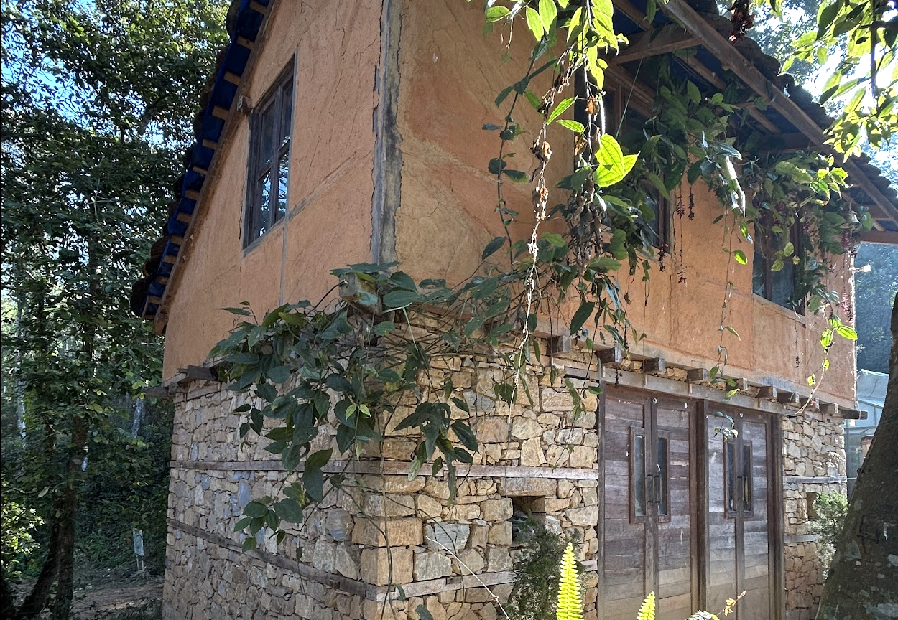
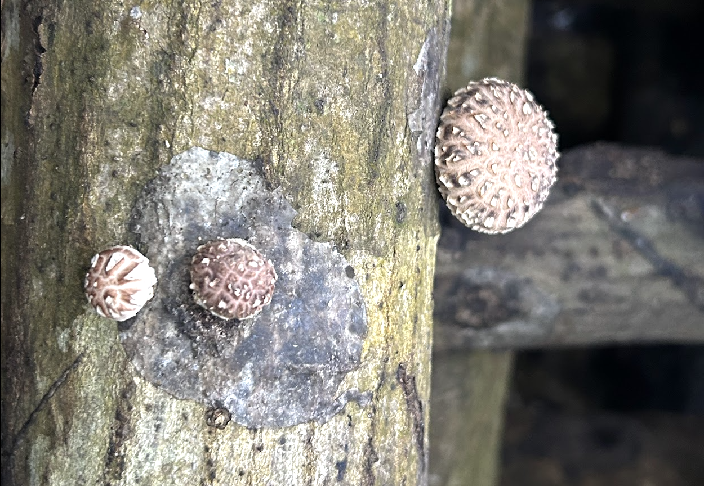
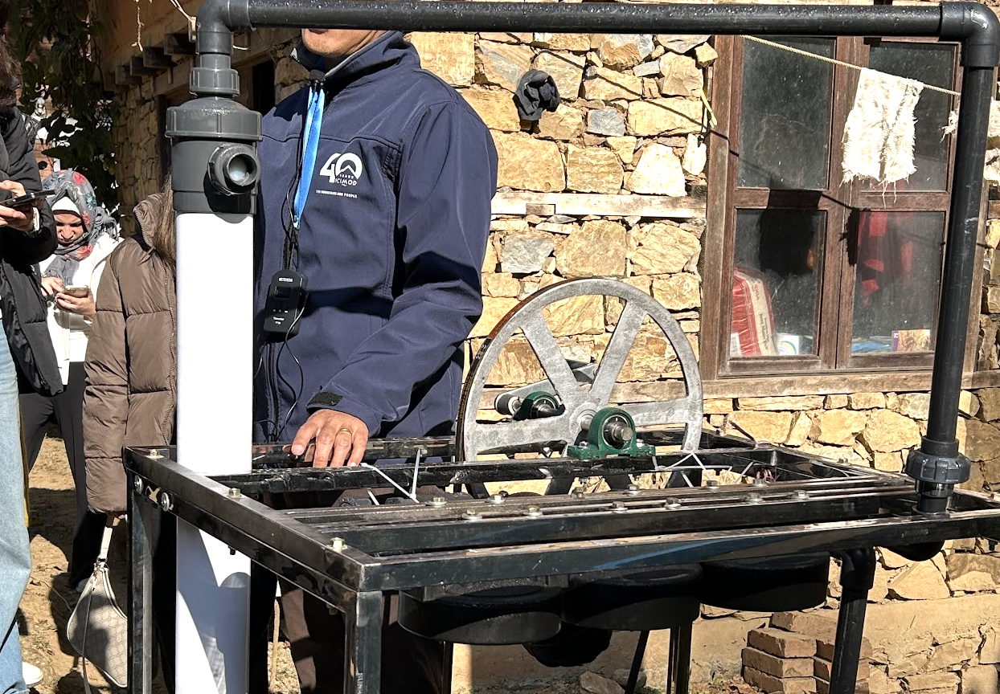

Introduction
Nestled in the serene Phulchowki watershed, the ICIMOD Living Mountain Lab stands as a beacon of innovation, sustainability, and eco-friendly practices. Formerly known as the ICIMOD Knowledge Park at Godavari, this 30-hectare facility is designed to promote sustainable technologies and practices that uplift mountain communities while preserving the environment. My visit to this remarkable lab left me inspired by the dedication to affordability and environmental stewardship in every aspect of its work.
The Mission and Purpose of the Living Mountain Lab
The Living Mountain Lab is much more than a research facility. Its primary objective is to bridge theoretical knowledge with practical applications by showcasing sustainable agricultural practices and technologies. Since its establishment in 1993, the lab has served as a living demonstration site, training over 87,000 visitors, including farmers, students, and development practitioners. Through hands-on learning experiences, these individuals gain valuable insights into techniques and technologies that can be implemented in their own communities.
Affordability and Eco-Friendliness
Throughout the tour, the emphasis on creating affordable and sustainable solutions was evident. Each innovation at the facility is thoughtfully designed to improve the quality of life for mountain communities while maintaining harmony with the environment. By relying on natural, locally available materials such as bamboo sticks, mud, and organic fertilizers, these solutions are both economical and environmentally friendly. The approach highlights how traditional methods can be adapted into practical, modern technologies that meet the needs of the local population.
Addressing Climate Change
The lab also highlighted the pressing issue of global warming and its impact on mountain ecosystems. I learned that last year was the hottest on record, with noticeable changes in weather patterns and snow levels. The reduced snowfall and unpredictable water levels pose significant challenges to agriculture and livelihoods in the region. However, the lab’s innovations, such as water management systems and flood warning technologies, aim to mitigate these effects and build resilience.
Affordable innovations in Sustainable Technology
Eco-Friendly Housing
The housing solutions developed at the lab are designed with affordability in mind. These structures use a clay mixture consisting of one part cement, three parts sand, and bamboo sticks to create a sturdy and cost-effective alternative to traditional materials. The foundation is built with heavy stones, while the upper sections utilize bamboo and recycled roofing materials. These low-cost designs not only reduce expenses but also offer durability and earthquake resistance, making them highly suitable for mountain environments.

Mushroom Cultivation
The approach to mushroom cultivation relies on simple, cost-effective methods that utilize readily available materials such as wood and tree logs. These systems, though basic, enable year-round production and are affordable for small-scale farmers. By keeping the setup accessible and inexpensive, this method not only helps improve food security but also provides an additional income stream for local communities.

Water Management
The water management systems are a prime example of practicality and affordability. The manual pumping technique, while not the most efficient, allows water to be lifted up to 50 meters using gravity alone, making it easy to implement with minimal costs. Additionally, the water jars for rainwater collection are designed to prevent microbial growth by blocking sunlight. These simple yet effective setup ensures that even remote communities can afford and maintain essential water systems.

Community-Based Flood Early Warning System
The Living Mountain Lab has developed a Community-Based Flood Early Warning System (CBFEWS), an innovative yet cost-effective solution for managing flood emergencies. This system is designed to provide early warnings to vulnerable communities, increasing their preparedness and minimizing the potential loss of life and property.
The system relies on simple yet reliable technology, including water level sensors and GSM alarm units, to monitor river conditions. When water levels rise beyond a critical point, the system sends out alarms, giving residents ample time to take action. The CBFEWS prioritizes affordability by utilizing locally sourced components and straightforward mechanisms that can be implemented and maintained by community members themselves.
This approach not only ensures the system's accessibility but also empowers communities to play an active role in disaster risk management. By reducing dependency on expensive infrastructure, CBFEWS stands as a practical and sustainable solution for flood-prone regions.
Challenges with Sunlight
One of the plants grown at the lab requires ample direct sunlight, but as the surrounding trees grew taller, they began blocking sunlight, causing the plants to weaken and develop diseases. While temporary treatment measures were taken, the lab recognizes the need for a more affordable, long-term solution. Plans are in place to selectively remove some trees to restore adequate sunlight and ensure the plants' health, maintaining the balance between nature and agriculture.
Conclusion
The ICIMOD Living Mountain Lab exemplifies how innovation, sustainability, and affordability can harmoniously coexist. By focusing on practical, eco-friendly technologies, the lab empowers communities to tackle the challenges of climate change, food security, and resource management. My visit to this inspiring facility reaffirmed the importance of investing in sustainable practices and left me hopeful for a greener, more resilient future.